Migueloncio1793 presents, with the help of Minecraft Java, MCreator and Blockbench…
* Oscurium *
Migueloncio1793 CREATION™ 🌐 OPERATIVO 🌐 Minecraft version 1.20.1 Forge
⚒ FORGE EXPERIENCE ⚒
🔧 This mod adds new bosses, items, tools, armor, mobs and dimensions. Let's get started…
📄 WIKI 📄
Enderman Essence: This is a new item similar to the ender pearl. To get it you need to kill an Enderman, and with a 10% chance he will release this essence.
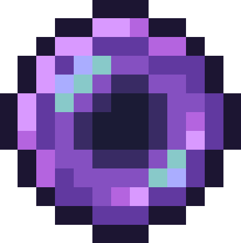
Dark Lantern: This lamp obviously does not emit any type of light, it only serves for this table and for decoration.

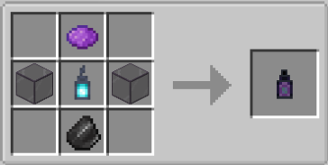
Dark altar: In this new table you will have to add three Enderman essences and a dark lamp to summon the new miniboss, the Dark Golem.
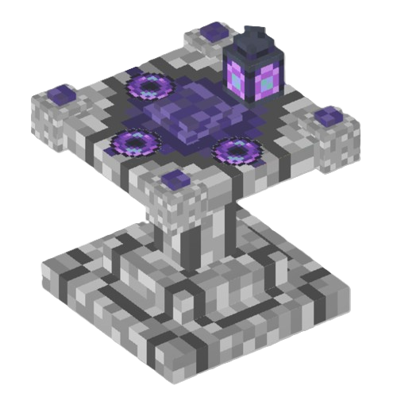
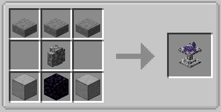
Dark Golem: This is the miniboss that comes out when you summon it with the dark altar. And it has these characteristics:
- Life: 150pts.
- Experience at death: 20pts.
- Movement
speed: 0.15
- Step height: 1
- Tracking range: 16 blocks
-
Tracking range: 64 blocks
- Attack strength: 20pts.
- Armor
protection: 3pts.
- Attack recoil: 0.8pts.
- Recoil
resistance: 1.5pts.
- Immune to arrows, falling damage and
drowning.
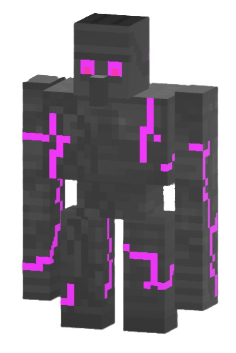
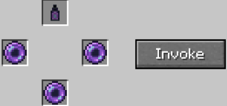
Dark Essence: This item will be dropped by the Dark Golem upon death, and can be used at the blacksmith table to upgrade your netherite weapon by 50%.
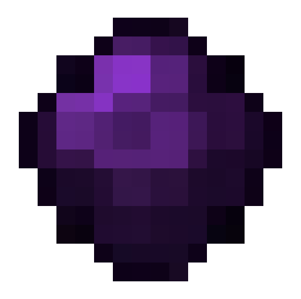
Dark rod fragment: This ore is released by the Dark rod fragment ore, and can only be smelted in a blast furnace.
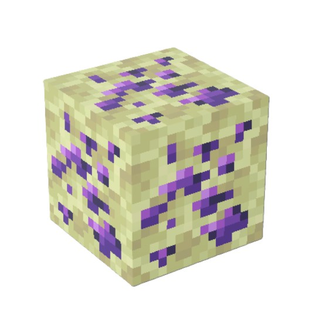
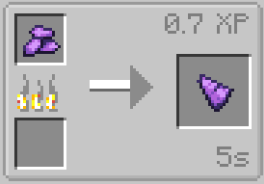
Dark rod: Four Dark rod fragments are needed to make this Dark rod.
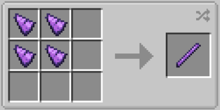
Cursed sword: This is a new sword. And it has these characteristics:
- Efficiency: 12pts.
- Enchantment: 2pts.
- Attack damage:
12pts.
- Attack speed: 2.4pts.
- Durability: 3046pts.
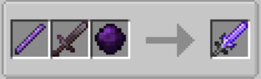
Cursed pickaxe: This is a new peak. And it has these characteristics:
- Efficiency: 13.5pts.
- Enchantment: 2pts.
- Attack
damage: 9pts.
- Attack speed: 1.8pts.
- Durability: 3046pts.
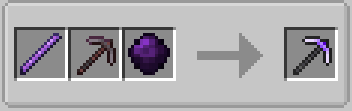
Cursed axe: This is a new axe.And it has these characteristics:
- Efficiency: 13.5pts.
- Enchantment: 2pts.
- Attack
damage: 15pts.
- Attack speed: 1.35pts.
- Durability: 3046pts.
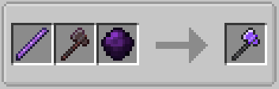
Cursed shovel: This is a new shovel. And it has these characteristics:
- Efficiency: 13.5pts.
- Enchantment: 2pts.
- Attack
damage: 7.5pts.
- Attack speed: 1.5pts.
- Durability:
3048pts.
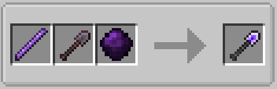
Cursed hoe: This is a new hoe. And it has these characteristics:
- Efficiency: 13.5pts.
- Enchantment: 2pts.
- Attack
damage: 6pts.
- Attack speed: 1.5pts.
- Durability:
4062pts.
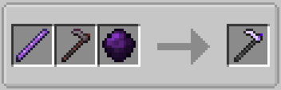
Cursed armor: This is a new armor. And it has these characteristics:
- Total durability: 55pts.
- Helmet damage reduction: 4pts.
-
Chestplate damage reduction: 12pts.
- Leggings damage reduction:
9pts.
- Boots damage reduction: 4pts.
- Enchantment:
22pts.
- Hardness: 4.5pts.
- Thrust resistance: 0.15pts.
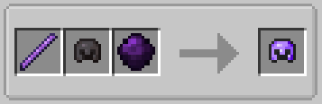
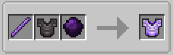
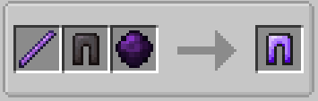
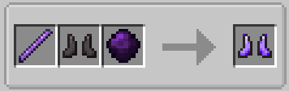
Cursed flint and steel: This lighter is used to open the portal to the Deep Void.
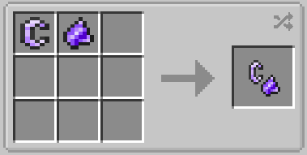
Mimetization Cristal: It is obtained with a 10% chance of defeating an Oscube, and by right clicking on this crystal you become invisible for 10 seconds.
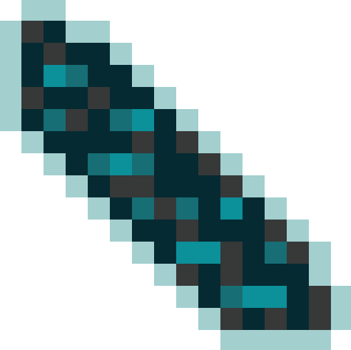
Obscurita ingot y Obscurita nugget: The Obscurite ingot is made by melting in a blast furnace a Raw Obscurite. And the Obscurite nugget is made like any other nugget.
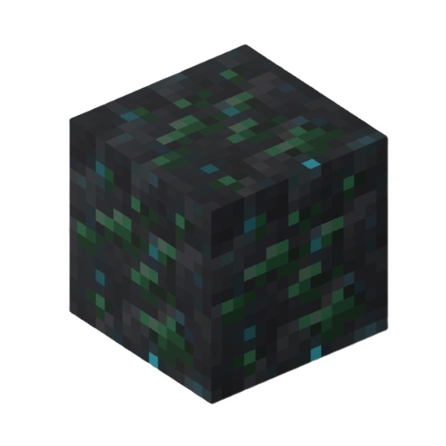
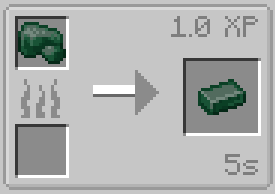
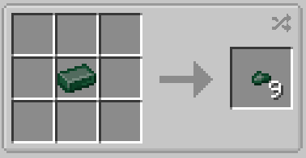
Obscurita armor: This is a new armor called Obscurita armor. And it has these characteristics:
- Total durability: 22pts.
- Helmet damage reduction: 2pts.
-
Chestplate damage reduction: 6pts.
- Leggings damage reduction:
5pts.
- Boots damage reduction: 2pts.
- Enchantment:
13pts.
- Hardness: 2.25pts.
- Thrust resistance:
0.125pts.
- Efectos: Quita la ceguera y añade visión nocturna.
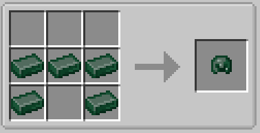
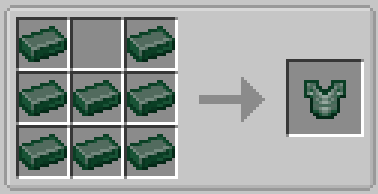
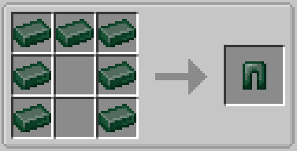
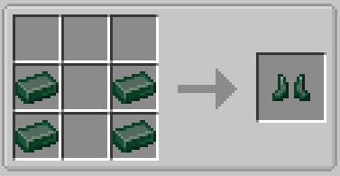
Immortal Cristal: It is obtained with a 10% chance of defeating an Deependerman, and by right clicking on this crystal gives you the “Immortal effect” for 5 seconds.
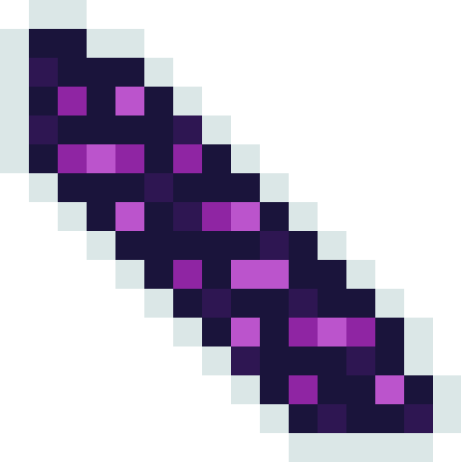
Immortal effect: This is a new effect that gives you maximum level resistance during the seconds the potion lasts, and if you are attacked you will not take damage and you will be teleported to a random place in a radius of 3x3 blocks in the “x” and “z” axes.
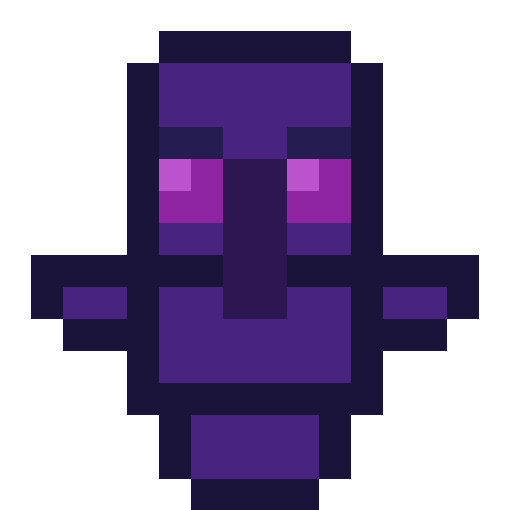
💡 IDEAS 💡
The ideas you submit for the mod, have to pass this filter, otherwise your ideas will not be re-evaluated:
To be able to contribute ideas enter to the Ideas section of Discord.
💡Required📌: When you are going to send an idea you will have to put as subject your Minecraft user name.
💡First rule📌: The idea cannot be longer than 50 words due to technical issues (you can exceed 10 words maximum) otherwise it will be rejected without looking at it.
💡Second rule📌: No obscene, obscure, or ideological ideas can be presented to influence real decisions and change the perspective of real life.
💡Third rule📌: It has to be things that have to do with the main idea of the Oscurium mod.
💡Fourth rule📌: If the idea has already been rejected, it cannot be resubmitted.
💡Fifth rule📌: If you send any nonsense or things that have nothing to do with contributing interesting and beneficial ideas for the development of the mod, they will be discarded.
💡Sixth rule📌: If there are already 20 ideas, no new ideas will be accepted or read until 50% of the existing ideas are completed.
⚙️ UPDATES ⚙️
The version of the mod and its update will be posted here:
⚙️ Version 1.2.5: A new mob called “Deependerman” has been added (he appears in the “Deep Void” dimension with a 7% chance), when defeated he will have a 10% chance to drop a new crystal, called “Immortal Crystal” (there is a mistake and it has the name “Mimetization Crystal”) which will give you for 5 seconds the “Immortal effect”, which makes you immortal and teleport in a 3x3 range when something attacks you. The “Cursed Shovel” has also been added, and therefore all cursed tools are finished.
⚙️ Version 1.2.4: Two achievements have been added, “Cursed Armour” (given when you have all the cursed armor and you get the item “Cursed Flint”) and “Cursed Tools” (given when you have all the cursed tools and you get the item “Cursed Steel”), also has been added the “Cursed flint and steel” and its crafting. Also the “Deep void” dimension has been added, you enter it when you use the new mech in the big portal of the ancient city, in it only spawnean endermans, and the blocks are the sculk block and the “Deepsculk”, a new block that breaks with the hoe and gives you experience.
⚙️ Version 1.1.9: Added the “Cursed pickaxe”, “Cursed axe” and “Cursed hoe” tools; also added the cursed armor, and added all the crafters of the above mentioned.
⚙️ Version 1.1.5: The “Dark rod fragment ore” block, the minerals “Raw dark rod fragment”, “Dark rod fragment” and the “Dark rod” item have been added. Also the “Dark lantern”, “Dark altar” and “Cursed sword” crafters have been changed.
⚙️ Version 1.0.9: The “Dark golem”, the “Dark altar”, all the essences and the lamp have been added. Several bugs and texture model errors have also been fixed.